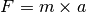
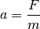
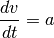
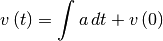
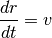
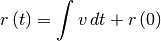
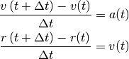
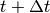
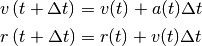
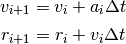

Integración de las ecuaciones de movimiento¶
El movimiento de cualquier objeto se describe en Física por la segunda ley de Newton:

Esto implica que conociendo la masa de un cuerpo y la fuerza que sobre él actúa, es posible calcular su aceleración como:

Al determinar la aceleración es posible calcular ahora la velocidad del objeto, ya que esta magnitud se relaciona con la primera por medio de la ecuación:
(1)
Al resolver esta ecuación diferencial se obtiene que:

Finalmente, con la velocidad se puede calcular la posición al resolver la ecuación
(2)
lo que es igual a

Ahora bien, para simular el movimiento descrito por estas ecuaciones en un computador, es necesario discretizarlas, es decir, expresarlas en forma de diferencias entre valores sucesivos de la posición y la velocidad, para así poder obtener un valor a partir del anterior.
De esta forma no es necesario resolver las ecuaciones diferenciales anteriores (lo que en la gran mayoría de los casos no es posible), sino tan sólo simular su evolución un paso de tiempo a la vez.
El método más sencillo para realizar este proceso de discretización recibe el nombre de
Método de Euler¶
En el método de Euler, las ecuaciones (1) y (2) se discretizan de la siguiente forma:

donde  representa una pequeña diferencia de tiempo entre un
instante y el siguiente. Como puede verse, lo único que se ha hecho es expresar
la derivada de la parte izquierda de (1) y (2) en la
forma en que usualmente se define, pero sin tomar el límite.
representa una pequeña diferencia de tiempo entre un
instante y el siguiente. Como puede verse, lo único que se ha hecho es expresar
la derivada de la parte izquierda de (1) y (2) en la
forma en que usualmente se define, pero sin tomar el límite.
Despejando de estas ecuaciones la posición y la velocidad en  se tiene que

Si guardamos las posiciones y velocidades en dos listas, cuyo elemento i-ésimo nos da la posición después de i pasos de tiempo, entonces las ecuaciones anteriores se pueden reescribir como

Estas son las ecuaciones que definen el método de Euler. De ellas puede verse que la posición y la velocidad en el siguiente instante de tiempo se calculan a partir de sus valores en el instante anterior y del valor de la aceleración.
Con estas ecuaciones se puede simular el movimiento de una gran cantidad de objetos, como veremos a continuación.